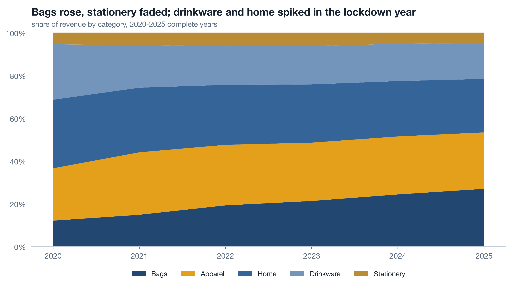
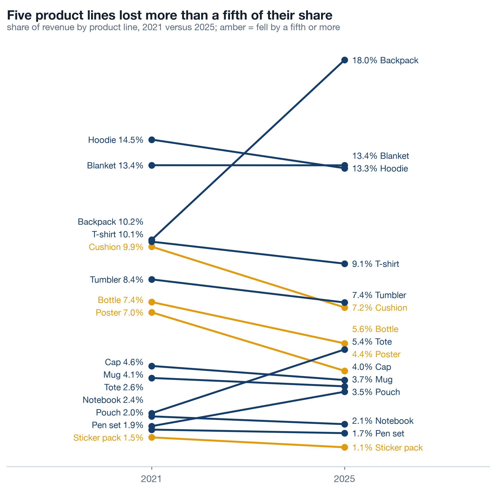
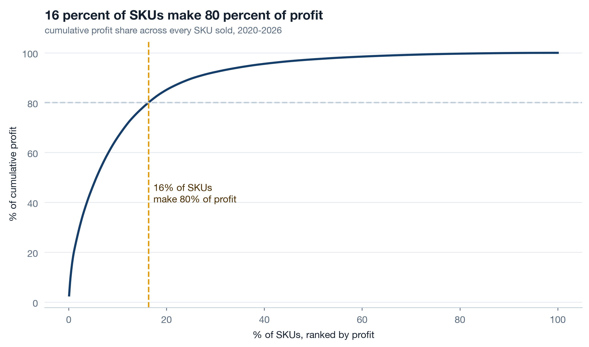
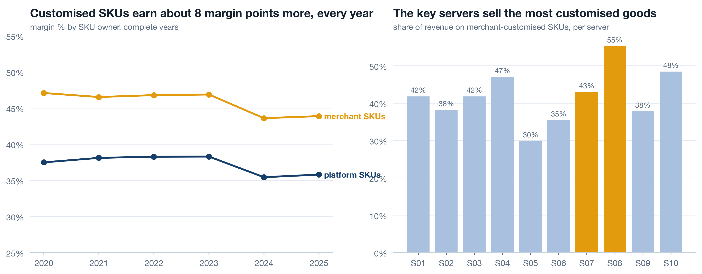
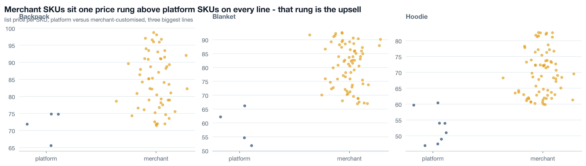
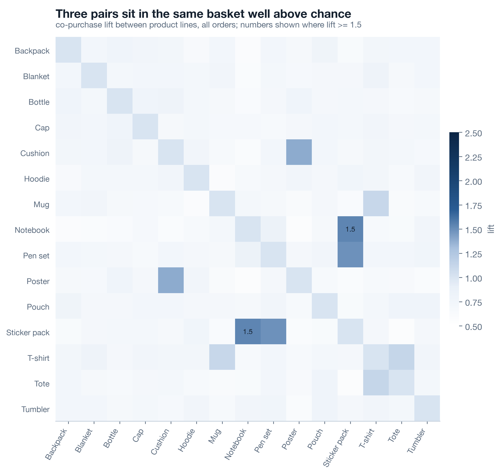
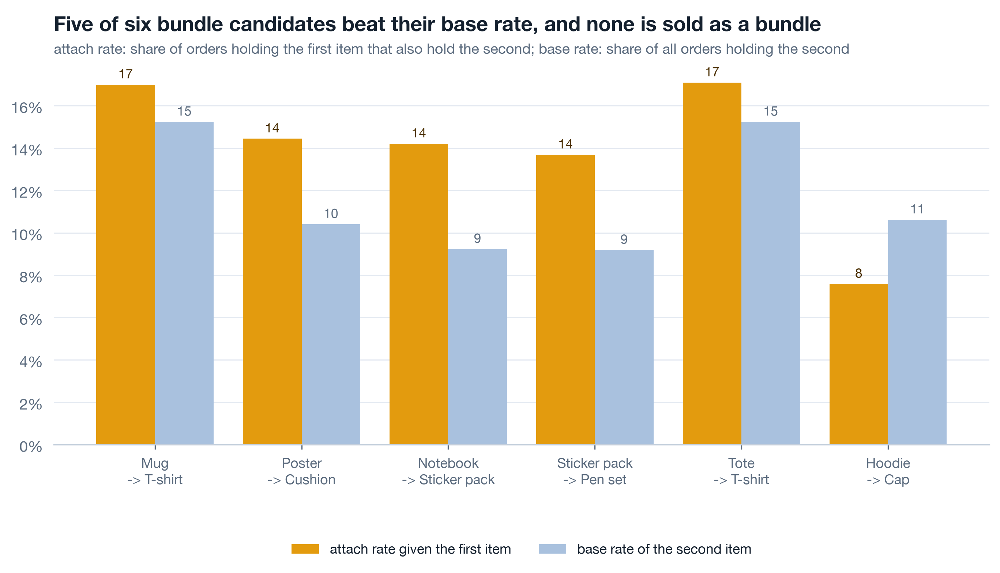
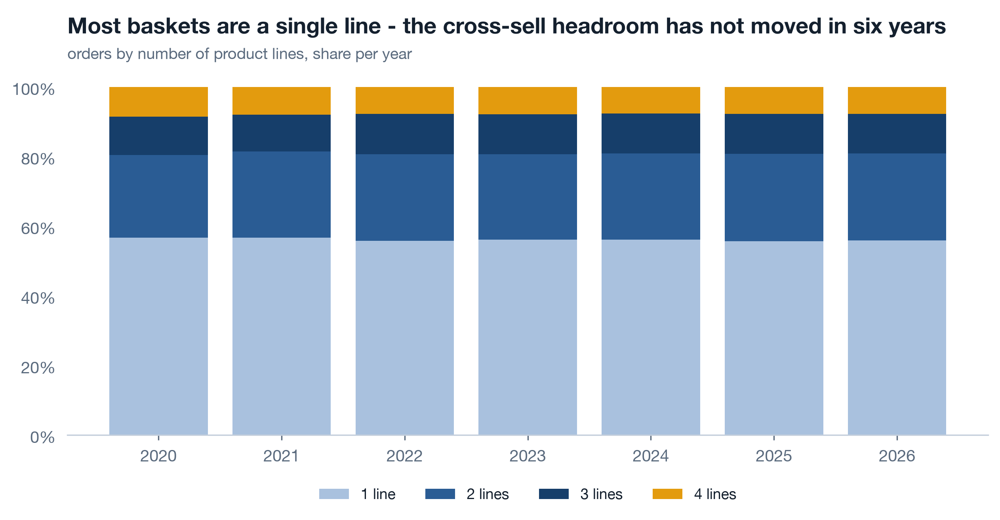
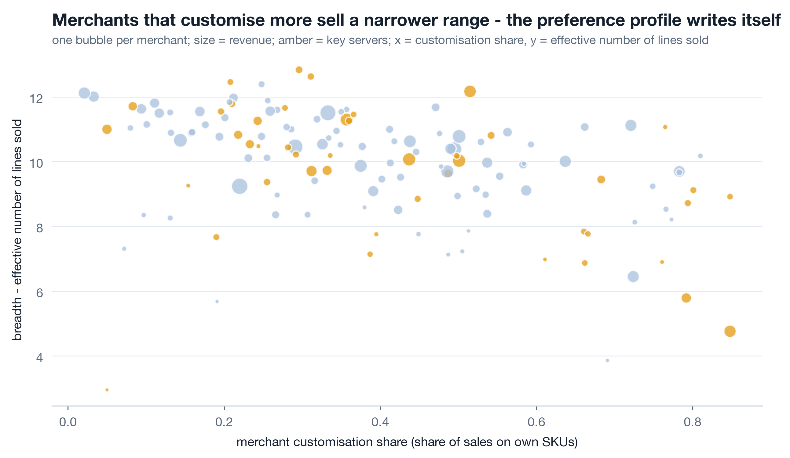

Where a3 sits
a1 mapped the tables and a2 followed the margin to a cost decision on two servers. a3 changes axis: from when and where to what. The product hierarchy answers the third of the nine angles - which categories, lines and SKUs grew or faded, and whether merchant-customised goods out-earn the platform's standards - and the basket work answers most of the ninth: pair lift, bundle candidates, cross-sell headroom and per-merchant preference. a4 measures merchants and stores; a5 does customers, promotions and the gaps. Same reader, same dedupe, same rule about the partial month. Work along in notebooks/a3_products_and_baskets.ipynb.
Category, line, SKU - and the owner axis 15 min live
Three levels down and then a fork. Category holds five values, product line fifteen, SKU 1,121 sold. At the leaf, owner says whether a SKU is one of the 98 platform standards or one of the 1,023 merchant-customised versions sold - same category, same line, different SKU, different price and cost. Analyse the levels in order, because a category total hides a line that is dying and a line total hides which owner is earning.
Live Share, not absolute 3 min▶
Revenue grew almost every year, so an absolute stacked chart of categories is five bands all getting taller and a reader who learns nothing. Divide each year by its total. Now the chart answers a different question - not "did we grow" but "did we shift" - and the shifts are the finding: drinkware and home spiked in 2020, bags rose steadily, stationery has faded since 2023. Use complete years only; 2026 is eight months and its share would be a blend of the wrong seasons.

| Year | Apparel | Bags | Drinkware | Home | Stationery |
|---|---|---|---|---|---|
| 2020 | 24.5 | 12.0 | 25.9 | 32.1 | 5.5 |
| 2021 | 29.2 | 14.7 | 20.0 | 30.2 | 5.8 |
| 2022 | 28.3 | 19.1 | 18.1 | 28.1 | 6.4 |
| 2023 | 27.3 | 21.2 | 17.9 | 27.3 | 6.3 |
| 2024 | 27.1 | 24.3 | 17.5 | 25.9 | 5.2 |
| 2025 | 26.4 | 26.9 | 16.8 | 25.0 | 4.9 |
Live Lines that fell 3 min▶
One level down, fifteen lines are too many for a stacked area and exactly right for a slope chart: each line's share of revenue in 2021 on the left, in 2025 on the right, one segment between. Colour only the lines that lost more than a fifth of their share. The eye reads the amber slopes in a second and ignores the rest, which is what a slope chart is for. Two full years four years apart avoids both the 2020 spike and the partial 2026.

Live Where profit concentrates 3 min▶
Rank every SKU sold by total profit, accumulate, and plot cumulative profit share against cumulative SKU share. The curve bends hard: a small share of SKUs carries 80 percent of profit, and the long tail is hundreds of SKUs that each earn almost nothing. A Pareto curve is a catalogue decision waiting to be made - which SKUs to feature, which to leave to merchants, which to retire - and it is also the reason category totals mislead: a category can look healthy on the strength of three SKUs.

| Owner | SKUs sold | Margin | Share of profit |
|---|---|---|---|
| platform | 98 | 36.6% | 52.5% |
| merchant | 1,023 | 44.9% | 47.5% |
Read the owner table twice. Ninety-eight platform SKUs make just over half the profit: they are the volume. The 1,023 merchant SKUs make just under half at a margin 8.3 points higher: they are the rate. Neither is the "better" half; the platform runs on both.
Live Platform vs merchant SKUs 3 min▶
Customisation is Printwell's thesis: merchants make their own versions of the platform's lines and the platform earns more on them. The data is allowed to say whether the thesis pays. Margin by owner per complete year on the left; share of revenue on merchant SKUs per server on the right, key servers amber. The margin gap holds in every year, so it is a property of the goods, not of one good year.

dim_product stores product_line and owner as two columns. A catalogue that files a merchant's mug as its own line, or overwrites the base SKU with the customised one, destroys both charts on this card and every retention cut in a5. When you design a product table, the base line and who owns the variant are different facts; store both.
Self-study The price ladder is the upsell 3 min▶
For the three biggest lines, plot every SKU's list price, platform on the left and merchant on the right. Merchant SKUs sit one rung above platform SKUs on every line: the customised version of a mug costs more than the standard mug, and that rung is the upsell path a store can walk a customer up. Where a line has no merchant SKUs, there is no rung and nothing to upsell to, which is a merchant-success conversation rather than an analytics one. Read the ladder alongside the owner-margin chart: the higher price and the higher margin are the same fact seen from two sides.

Baskets: support, confidence, lift in pandas 14 min live
What sits together in an order? Three measures answer it and all three are ratios of counts. Support: how often the pair appears at all. Confidence: given the first item, how often the second. Lift: confidence against the second item's base rate - how much more often than chance. At the product-line level on 145,640 orders, the strongest pairs top out around 1.5: notebook + sticker pack, sticker pack + pen set, poster + cushion, then mug + t-shirt and t-shirt + tote near 1.1. Modest lifts, real supports. That is what a bundle candidate looks like in commerce data.
Live pair_lift without a library 6 min▶
Self-join the order-line table on txn_id, keep each unordered pair once with a string comparison, count distinct orders per pair, and divide. That is the whole algorithm at pair level, and doing it by hand once means you will never again read a lift table without knowing exactly what the denominators are. min_support comes first, before ranking: a pair that appears in twelve orders can have a lift of 9 by luck, and it will sit at the top of any table sorted by lift. The 0.002 floor means a pair must appear in at least a fifth of a percent of orders before its lift is allowed to speak.

| Pair | Orders with both | Support | Confidence x to y | Lift |
|---|---|---|---|---|
| Notebook + Sticker pack | 1,692 | 0.012 | 0.142 | 1.54 |
| Pen set + Sticker pack | 1,841 | 0.013 | 0.138 | 1.49 |
| Cushion + Poster | 2,180 | 0.015 | 0.144 | 1.39 |
| T-shirt + Tote | 2,687 | 0.018 | 0.121 | 1.12 |
| Mug + T-shirt | 2,802 | 0.019 | 0.170 | 1.12 |
| Notebook + Pen set | 925 | 0.006 | 0.078 | 0.85 |
Read the table with the pair the data planted in mind: the stationery trio co-occurs above chance as two pairs, notebook + sticker pack and sticker pack + pen set, while notebook + pen set sits below 1. Lift is pairwise; a three-item bundle is not the sum of its pairs, and the honest bundle offer here is "sticker pack with either", not a trio.
Live Attach rate vs base rate 5 min▶
Lift is the analyst's number. The attach rate is the merchandiser's: given a mug is in the basket, how often is a t-shirt? Draw it next to the base rate of t-shirts in any basket and the gap is the bundle nobody is selling on purpose - customers are already assembling it more often than chance, without a prompt, a discount or a "goes well with" tile. Six pairs, two bars each.

| Given the first item | Attach rate | Base rate of the second | Gap |
|---|---|---|---|
| Mug -> T-shirt | 17.0% | 15.2% | +1.8 |
| Poster -> Cushion | 14.4% | 10.4% | +4.0 |
| Notebook -> Sticker pack | 14.2% | 9.2% | +5.0 |
| Sticker pack -> Pen set | 13.7% | 9.2% | +4.5 |
| Tote -> T-shirt | 17.1% | 15.2% | +1.9 |
| Hoodie -> Cap | 7.6% | 10.6% | -3.0 |
Self-study Basket size over time 3 min▶
Count distinct product lines per order, then the distribution per year. Most Printwell baskets are a single line, every year. That is the plain statement of the cross-sell headroom: the pair lifts above are computed on the minority of orders with two or more lines, and the majority never got the chance to attach anything. A bundle programme's ceiling is the one-line share, and its progress metric is that share going down. Draw the chart before promising anything about baskets.

Customer preference per merchant 8 min live
The platform view says what sells; the merchant view says what sells for whom. Every merchant has a top line, the share of its revenue that line takes, and a breadth score: how many lines it effectively sells, not how many it has listed. Two merchants with fifteen lines each can have breadth 2 and breadth 11. This is the table a merchant success team hands to each merchant, and it is the first place a "your customers like X, try Y" conversation gets its X.
Live Top line and breadth 5 min▶
Breadth is the exponential of the Shannon entropy of a merchant's revenue shares across lines: the effective number of lines. A merchant selling fifteen lines equally scores 15; one selling almost only mugs scores just above 1. Counting lines with any sale would give both a 15 and tell the success team nothing. The where(shares > 0, 1) guard keeps log(0) out of the sum without dropping rows.

| Merchant | Top line | Top line share | Breadth | Server | Vertical |
|---|---|---|---|---|---|
| M020 | Blanket | 29.4% | 9.24 | S01 | nonprofit |
| M017 | Backpack | 22.5% | 11.51 | S04 | sports club |
| M014 | Blanket | 25.6% | 10.46 | S06 | creator |
| M030 | Backpack | 23.3% | 10.39 | S03 | corporate gifting |
| M041 | Backpack | 24.5% | 10.03 | S07 | sports club |
The top five by revenue are all enterprise merchants with breadth between 9 and 12: they already sell across the catalogue and the conversation with them is about depth, not breadth. The file reports/a3_merchant_preference.csv carries all 140, and the ones that matter to a success team are further down: high revenue on one line, breadth under 3, and a pair-lift table that says what their customers buy elsewhere.
Self-study From lift to a bundle offer 3 min▶
A lift of 1.5 is not a business case. Sizing one honestly takes three numbers you already have and one you must decide. The attach gap - attach rate minus base rate - is the share of first-item orders that already carry the second above chance, and the most a prompt can plausibly move is some fraction of the orders that do not. Multiply the orders with the first item by the gap you expect to close, then by the margin of the second item, and you have an annual profit figure for the bundle before any discount. Then subtract the discount on every order that would have bought both anyway; that is the cost of bundling, and it is usually most of the benefit if the discount is generous.
- Size it on the notebook + sticker pack gap of 5.0 points and the 1,692 orders that already hold both, not on the lift, which has no units.
- Decide the target before launch: attach rate on the first item, measured monthly, against a control group of stores that did not get the bundle tile.
- Watch two things after launch: does the attach rate rise, and does the one-line share of baskets in Part 2 fall? If the first moves and the second does not, the bundle is cannibalising two-line baskets rather than creating them.
- Re-run
lib.pair_lifton post-launch orders only. A bundle that works shows up as a higher lift on the pair; one that only discounts shows the same lift at a lower margin.
Rebuild the products notebook ★ 18 min · everyone builds
Open notebooks/a3_products_and_baskets.ipynb, run it once, then rebuild each section against the shared reader. Same seed, same 1,121 SKUs, same lift table.
Load and restrict. dedupe=True, drop the partial month, and make a full_years frame for 2020-2025. Print the counts of categories, lines and SKUs sold.
Share by category. Groupby year and category, divide each year by its total, stackplot ordered by the 2025 share. Check that every row of the table sums to 100.
Slope chart. Share per line in 2021 and 2025; amber where 2025 is under 80 percent of 2021. Label every line on the chart itself.
Pareto and owner. Rank SKUs by profit, cumulate, find where 80 percent is crossed. Then the owner table: SKUs, margin, profit share. It should read 36.6 against 44.9 percent.
Owner over time. Margin by owner per year and merchant-SKU share per server. Confirm the margin gap holds in every year, not just on average.
Pairs. lib.pair_lift with min_support=0.002, write the bundle-candidate file, draw the lift matrix. Try min_support=0 once and watch what climbs to the top.
Attach rates and basket size. The six-pair attach chart with base rates, then lines per order per year. Say the one-line share out loud; that is the headroom.
Preference per merchant. Top line, top-line share, breadth as effective lines, joined to the merchant dimension. Write the CSV a success team can open.
python3 analysis/nbgen.py notebooks/src/a3_products_and_baskets.py. A failed run leaves no notebook and no figures. Then open reports/a3_bundle_candidates.csv and read the bottom rows too: pairs below lift 1 are as real as the ones above it, and a bundle table that only shows winners has been filtered by someone.
Try it yourself - this week ◐ 45 min
- Take any catalogue you work with and draw share by top-level category per year next to absolute revenue per year. Write one sentence per category that is true of the share chart and false of the absolute one.
- Run
pair_lifton your own orders at whatever level you have. Once withmin_support=0, once with a floor. Note which pairs vanished from the top ten and how many orders each of them had. - Compute breadth as effective lines for your merchants, stores or accounts. Find the three with the highest revenue and breadth under 3, and write down what a cross-sell conversation with each would open with.
What this session draws on
Product-mix and basket analysis are standard retail-analytics craft rather than a certified course. The working core drawn on here:
Three questions before you go 🎯 ◐ 90 seconds
1 · With no support floor, the top of your lift table is a pair with lift 9 that appears in eleven orders. What do you do with it?
Lift divides by two small probabilities, so a pair that co-occurs a handful of times by luck gets an enormous number. The floor comes before the ranking. At line level on 145,640 orders the honest maximum is around 1.5, on pairs with over a thousand orders each.
2 · Drinkware revenue rose every year from 2020 to 2025. Its share of revenue fell from 25.9 to 16.8 percent. Which chart goes in front of the chairman, and why?
Absolute and share never disagree; they measure different things. Absolute stops anyone thinking the category shrank. Share stops anyone thinking it is still the future. A page that shows only one is choosing the reader's conclusion for them.
3 · A merchant creates a customised mug. The catalogue team proposes filing it as a new product line called "M041 Mug". Why is that a mistake?
The margin-by-owner chart, the price ladder, the customised share per server and the retention-by-customisation cut in a5 all join on product_line and owner as separate columns. Fold the owner into the line name and the base line disappears from the merchant's SKUs; the comparison can never be recomputed.